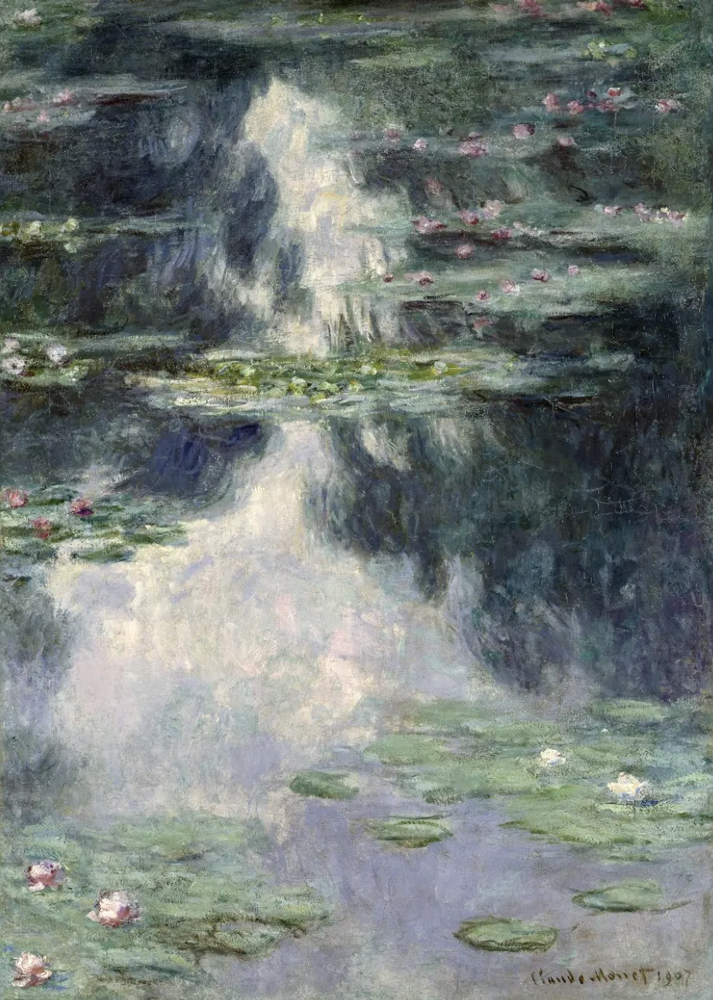

Section 01一、想象一条河
让我们想象一个画面：

想象一条河，水流之所以从 A 流到 B，并不是水的意志决定的，而是河床的结构规定了它只能这么流。这么流才是最小阻力之路，消耗的能量最少。
你可以通过人工挑水让水从 B 往 A 运，但这样很累。
哪天你不挑水了，水还是会从 A 往 B 流，并没有发生实质性的变化。
如果你想让水自然而然地从 B 往 A 流，就必须改变河床的结构。这样一来，你之后就再也不用自己去挑水了。
Section 02二、挑水的人，和钟摆
那个挑水的过程，以及放弃挑水、又想挑水、又放弃挑水……
我们生活当中的这种「钟摆模式」，就是因为只想通过改变个人意志来改变行为习惯。
想要改变 → 采取行动 → 稳定后 → 回避改变 → 回到现状 → 又想要改变……
拼命地咬咬牙再坚持一下，如果没做到，就觉得是自己不够有毅力，反而责怪自己，于是变本加厉，更加不愿意做了。
举我自己的两个例子。
早上我起床，如果手机就在我的耳边，我就自然而然会晚起，因为拿起手机开始玩，这最省力。
我的手机如果远离我的床，我下床之后，自然而然就开始穿衣服去洗漱了。
如果我依旧赖在床上玩手机，玩到只剩9%的电，我就不得不起床给它充电。
这跟我的个人意志没关系，纯粹是因为这个结构让我不得不下床。
所以从改变结构出发，去获得你想要的目标。
最近我开始建立早睡早起的结构。
一开始怎么都不成功。因为我一直在电脑面前，最省力的方式就是继续对着电脑做下去。
而如果我晚上10点，把手机、电脑、iPad放到客厅，减少蓝光和大脑兴奋，我就自然而然地早睡了。
一个行为之所以产生，不是由个人意志决定的，而是内在结构决定的。
Section 03三、两个条件，一台内在引擎
如果你想长久地做成一件事，需要具备两个条件：
1、你的愿景（Vision）
清晰界定你想要创造的最终结果。（我要去哪，我的渴望是什么，我的理想生活是什么？）
2、你对当下现状如实的描述（Current Reality）
看清你在目标面前的当下现实。（我现在在哪，目前的实际情况是怎么样的？客观、不带评判地看见。）
这两者之间会产生一种「结构性张力」。
张力天然寻求消解。这里说的张力，不是压力、紧张或焦虑，而是结构。
它是一种动力：一旦你确立了愿景，也看清了当下现实，你就拥有了一台内在引擎。
- 只有愿景，不看清现实 → 没有张力，没有动力，什么也不会发生。
- 只看清现实，没有愿景 → 同样什么也不会发生。
Section 04四、今日开喷指引
去看见自己对实现目标的渴望，以及依赖「最省力原则」去实现最小的行动。
我们要把行动嵌入到日常生活中，不用去决定做还是不做，就像吃饭和刷牙一样顺其自然。
我们不会去纠结今天要不要吃饭、要不要刷牙，而是直接去做。
即便做上 15 分钟不知道说什么也没有关系，重点是去把这 15 分钟填满。
点击开录，把手机屏幕关黑。（因为看着那个录音键，点击停止太省力了。）
中途如果有任何想要停止录音的冲动，都不用去真的按下停止键，而是告诉自己：
我现在虽然不知道该说什么，我想要停止录音，但我知道我不能，因为我的目标是录满 15 分钟。
不如想一想，说一说待会要去做什么。
现状是：还没有喷。
这种张力指引你——拥有目标，才可能走到那里。
Section 05五、你最大的愿景是什么？
这种以每日为单位的小张力，如果单独使用会越用越弱，它需要挂在更大的愿景下面才能持续供能。
所以，你那个最大的愿景是什么？
33天后拥有一份自我研究报告？一份3W字的自我研究报告哎，你不想要吗？
成本是：只需要每天开喷15分钟。
太赚了，我要做。
（这里我是举个例子。今天开喷时，你可以说出你自己的目标和愿景——我要去哪，我现在在哪。）
—— 重要概念：振荡与前进、内在结构、结构性张力、愿景与现实，来源于罗伯特·弗里兹《最小阻力之路》
—— 云不见 · 2026.07.07